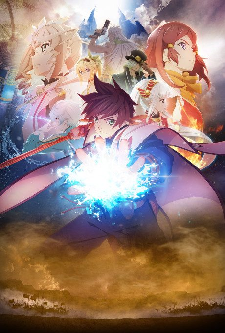

Fairy Tail
FAIRY TAIL
Lucy, a young celestial wizard, joins Fairy Tail, the rowdiest magic guild in the kingdom, and teams up with the fire dragon slayer Natsu.
The anime covers the whole manga.
7.2AniList score
—Animeter, no votes yet
353episodes, 4 seasons
Rate it or report where you stopped
Is it worth pushing through?
Built from what visitors report across all 4 seasons (353 episodes).
Loading reports…Checking what other people said about this one.
Sign in above with your email to add your report.
More like Fairy Tail
 Manga Ch. 2707.9
Manga Ch. 2707.9
 Done7.3
Done7.3
 Manga Ch. 11518.7
Manga Ch. 11518.7
 Manga Vol. 128.0
Manga Vol. 128.0
 Manga Ch. 1117.4
Manga Ch. 1117.4
 Manga Ch. 3408.9
Manga Ch. 3408.9
 Manga Ch. 377.7
Manga Ch. 377.7
 Manga Vol. 117.7
Manga Vol. 117.7
 Manga Vol. 197.3
Manga Vol. 197.3
 Done8.5
Done8.5
 Manga Ch. 2127.3
Manga Ch. 2127.3

VN6.9